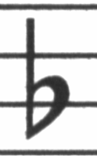

| [ << Einleitung ] | [Anfang][Inhalt][Index][ ? ] | [ Übung >> ] | ||
| [ < Einleitung ] | [ Nach oben : Einleitung ] | [ Notensatz > ] | ||
1.1 Hintergrund
Dieser Abschnitt behandelt die allgemeinen Ziele und die Architektur von LilyPond.
| Notensatz | ||
| Automatisierter Notensatz | ||
| Welche Symbole? | ||
| Die Darstellung der Musik | ||
| Beispielanwendung |
| [ << Einleitung ] | [Anfang][Inhalt][Index][ ? ] | [ Übung >> ] | ||
| [ < Hintergrund ] | [ Nach oben : Hintergrund ] | [ Automatisierter Notensatz > ] | ||
Notensatz
Die Kunst des Notensatzes wird auch als Notenstich bezeichnet. Dieser Begriff stammt aus dem traditionellen Notendruck. Noch bis vor etwa 20 Jahren wurden Noten erstellt, indem man sie in eine Zink- oder Zinnplatte schnitt oder mit Stempeln schlug. Diese Platte wurde dann mit Druckerschwärze versehen, so dass sie in den geschnittenen und gestempelten Vertiefungen blieb. Diese Vertiefungen schwärzten dann ein auf die Platte gelegtes Papier. Das Gravieren wurde vollständig von Hand erledigt. Es war darum sehr mühsam, Korrekturen anzubringen, weshalb man von vornherein richtig schneiden musste. Es handelte sich dabei um ein sehr spezialisiertes Handwerk.
Heutzutage wird fast alle gedruckte Musik von Computern erstellt. Das hat einige deutliche Vorteile: Drucke sind billiger als die gravierten Platten und der Computersatz kann per E-Mail verschickt werden. Leider hat der intensive Einsatz des Computers die graphische Qualität des Notensatzes vermindert. Mit dem Computer erstellte Noten sehen langweilig und mechanisch aus, was es erschwert, von ihnen zu spielen.
Die Abbildung unten illustriert den Unterschied zwischen traditionellem Notensatz und einem typischen Computersatz. Das dritte Bild zeigt, wie LilyPond die Formen des traditionellen Satzes nachahmt. Das linke Bild zeigt ein eingescanntes b-Vorzeichen aus einer 2000 herausgegebenen Edition. Das mittlere Bild zeigt das b-Vorzeichen der selben Musik aus einer handgestochenen Bärenreiter-Ausgabe. Das linke Bild zeigt die typischen Makel des Computer-Satzes: Die Notenlinien sind sehr dünn, die Schwärze des Vorzeichens entspricht den dünnen Linien und hat eine gerade Form mit scharfen Ecken und Kanten. Im Gegensatz dazu hat das Bärenreiter-Vorzeichen dicke, gerade zu sinnlich rundliche Formen. Unser Symbol für das Vorzeichen hat neben anderen auch dieses b als Vorbild. Es ist abgerundet und passt zu unseren Notenlinien, die sehr viel dicker sind als die der entsprechenden Computer-Ausgabe.
|  |  |  | |
Henle (2000) | Bärenreiter (1950) | LilyPond Feta-Schriftart (2003) |
Die Verteilung der Noten innerhalb des Taktes sollte ihrer Dauer entsprechen. Moderne Partituren zeigen diese Verhältnisse jedoch mit einer mathematischen Präzision, die nur sehr schlechte Ergebnisse bringt. Im nächsten Beispiel ist ein Motiv zweimal gesetzt: einmal mit den exakten mathematischen Längenverhältnissen, dann mit kleinen Korrekturen. Welches von beiden ist mit dieser Korrektur gesetzt?
![[image of music]](../90/lily-35e012eb.png)
![[image of music]](../1c/lily-f9b0aa77.png)
In diesem Ausschnitt kommen nur Viertel vor, Noten, die in einem gleichmäßigen Rhythmus gespielt werden. Die Abstände sollten das widerspiegeln. Leider lässt uns aber das Auge im Stich: es beachtet nicht nur den Abstand von aufeinander folgenden Notenköpfen, sondern auch den ihrer Hälse. Also müssen Noten, deren Hälse in direkter Folge zuerst nach oben und dann nach unten ausgerichtet sind, weiter auseinander gezogen werden, während die unten/oben-Folge engere Abstände fordert, und das alles auch noch in Abhängigkeit von der vertikalen Position der Noten. Das obere Beispiel ist mit dieser Korrektur gesetzt, das untere ohne. In letzterem Fall bilden sich für das Auge bei unten/oben-Folgen Notenklumpen mit schmalen Abständen zwischen den Notenhälsen.
Musiker sind üblicherweise zu zu konzentriert, die Musik aufzuführen, als das Aussehen der Noten zu studieren; und diese Beschäftigung mit typographischen Details mag akademisch wirken. Das ist sie aber nicht. Unser Beispielstück hat einen monotonen Rhythmus, und wenn alle Zeilen gleich aussehen, wird das Notenblatt zu einem Labyrinth. Wenn der Spieler auch nur einmal wegschaut oder kurze Zeit unkonzentriert ist, findet er nicht mehr zurück zu der Stelle, an der er war.
Der dichtere Eindruck, den die dickeren Notenlinien und schwereren Notationssymbole schaffen, eignet sich auch besser für Noten, die weit vom Leser entfernt stehen, etwa auf einem Notenständer. Eine sorgfältige Verteilung der Zwischenräume erlaubt es, die Noten sehr dicht zu setzen, ohne dass die Symbole zusammenklumpen. Dadurch werden unnötige Seitenumbrüche vermieden, sodass man nicht so oft blättern muss.
Dies sind die Anforderungen der Typographie: Das Layout sollte schön sein – nicht aus Selbstzweck, sondern um dem Leser zu helfen. Für Aufführungsmaterial ist das umso wichtiger, denn Musiker haben eine begrenzte Aufmerksamkeit. Je weniger Mühe nötig ist, die Noten zu erfassen, desto mehr Zeit bleibt für die Gestaltung der eigentlichen Musik. Das heißt: Gute Typographie führt zu besseren Aufführungen!
Die Beispiele haben gezeigt, dass der Notensatz eine subtile und komplexe Kunst ist und gute Ergebnisse nur mit viel Erfahrung erlangt werden können, die Musiker normalerweise nicht haben. LilyPond stellt unser Bemühen dar, die graphische Qualität handgestochener Notenseiten ins Computer-Zeitalter zu transportieren und sie für normale Musiker erreichbar zu machen. Wir haben unsere Algorithmen, die Gestalt der Symbole und die Programm-Einstellungen darauf abgestimmt, einen Ausdruck zu erzielen, der der Qualität der alten Editionen entspricht, die wir so gerne betrachten und von denen wir gerne spielen.
| [ << Einleitung ] | [Anfang][Inhalt][Index][ ? ] | [ Übung >> ] | ||
| [ < Notensatz ] | [ Nach oben : Hintergrund ] | [ Welche Symbole? > ] | ||
Automatisierter Notensatz
Wie sollen wir also jetzt die Typographie anwenden? Wie können wir erwarten, dass wir in der Lage wären, ein Programm zu schreiben, dass den Beruf des Notenstechers ersetzt, wo dieser doch mehr als zehn Jahre braucht, um ein Meister zu werden?
Wir können es tatsächlich nicht! Da Typographie allein durch das menschliche Auge bestimmt ist, kann der Mensch nicht ersetzt werden. Aber sehr viel mechanische Arbeit kann automatisiert werden. Indem etwa LilyPond die üblichen Situationen kennt und bewältigt, können die restlichen Fehler von Hand beseitigt werden. Das ist schon ein großer Fortschritt im Vergleich zu den existierenden Programmen. Und mit der Zeit können immer mehr Fälle automatisiert werden, so dass immer weniger Eingriffe von Hand notwendig werden.
Als wir anfingen, haben wir LilyPond vollständig in der Programmiersprache C++ geschrieben. Das hieß, dass der Funktionsumfang des Programms vollständig durch die Programmierer festgelegt war. Das stellte sich aus einer Reihe von Gründen als unzureichend heraus:
- Wenn LilyPond Fehler macht, muss der Benutzer die Einstellungen ändern können. Er muss also Zugang zur Formatierungsmaschinerie haben. Deshalb können die Regeln und Einstellungen nicht beim Kompilieren des Programms festgelegt werden, sondern sie müssen während des Laufes zugänglich sein.
- Notensatz ist eine Frage des Augenmaßes, und damit auch vom Geschmack abhängig. Benutzer können mit unseren Entscheidungen unzufrieden sein. Darum müssen also auch die Definitionen des typographischen Stils dem Benutzer zugänglich sein.
- Schließlich verfeinern wir unseren Formatierungsalgorithmus immer weiter, also müssen die Regeln auch flexibel sein. Die Sprache C++ zwingt zu einer bestimmten Gruppierungsmethode, die nicht den Regeln für den Notensatz entspricht.
Diese Probleme wurden angegangen, indem ein Übersetzer für die Programmiersprache Scheme integriert wurde und Teile von LilyPond in Scheme neu geschrieben wurden. Die derzeitige Formatierungsarchitektur ist um die Notation von graphischen Objekten herum aufgebaut, die von Scheme-Variablen und -Funktionen beschrieben werden. Diese Architektur umfasst Formatierungsregeln, typographische Stile und individuelle Formatierungsentscheidungen. Der Benutzer hat direkten Zugang zu den meisten dieser Einstellungen.
Scheme-Variablen steuern Layout-Entscheidungen. Zum Beispiel haben viele graphische Objekte eine Richtungsvariable, die zwischen oben und unten (oder rechts und links) wählen kann. Hier etwa sind zwei Akkorde mit Akzenten und Arpeggien. Beim ersten Akkord sind alle Objekte nach unten (oder links) ausgerichtet, beim zweiten nach oben (rechts).
![[image of music]](../ad/lily-a808e181.png)
Der Prozess des Notensetzens besteht für das Programm darin, die Variablen der graphischen Objekte zu lesen und zu schreiben. Einige Variablen haben festgelegte Werte. So ist etwa die Dicke von vielen Linien – ein Charakteristikum des typographischen Stils – von vornherein festgelegt. Wenn sie geändert werden, ergibt sich ein anderer typographischer Eindruck.
![[image of music]](../45/lily-b8e84cc1.png)
Formatierungsregeln sind auch vorbelegte Variablen. Zu jedem Objekt gehören Variablen, die Prozeduren enthalten. Diese Prozeduren machen die eigentliche Satzarbeit, und wenn man sie durch andere ersetzt, kann die Darstellung von Objekten verändert werden. Im nächsten Beispiel wird die Regel, nach der die Notenköpfe gezeichnet werden, während des Ausschnitts verändert.
![[image of music]](../dd/lily-4ee665c7.png)
| [ << Einleitung ] | [Anfang][Inhalt][Index][ ? ] | [ Übung >> ] | ||
| [ < Automatisierter Notensatz ] | [ Nach oben : Hintergrund ] | [ Die Darstellung der Musik > ] | ||
Welche Symbole?
Während des Notensatzprozesses entscheidet sich, wo Symbole platziert werden. Das kann aber nur gelingen, wenn vorher entschieden wird, welche Symbole gesetzt werden sollen, also welche Notation benutzt werden soll.
Die heutige Notation ist ein System zur Musikaufzeichnung, das sich über die letzten 1000 Jahre entwickelt hat. Die Form, die heute üblicherweise benutzt wird, stammt aus dem frühen Barock. Auch wenn sich die grundlegenden Formen (also die Notenköpfe, das Fünfliniensystem) nicht verändert haben, entwickeln sich die Details trotzdem immer noch weiter, um die Errungenschaften der Neuen Musik darstellen zu können. Die Notation umfasst also 500 Jahre Musikgeschichte. Ihre Anwendung reicht von monophonen Melodien bis zu ungeheurem Kontrapunkt für großes Orchester.
Wie bekommen wir dieses vielköpfige Monster zu fassen?
Unsere Lösung ist es, eine strikte Trennung zwischen der Notation,
also welche Symbole benutzt werden, und dem Satz, also wohin sie
gesetzt werden, zu machen. Um das Problem anzupacken, haben wir
es in kleine (programmierbare) Happen zerteilt, so dass jede Art
von Symbol durch ein eigenes Plugin verarbeitet wird. Alle Plugins
kooperieren durch die LilyPond-Architektur. Sie sind vollständig
modular und unabhängig und können somit auch unabhängig voneinander
entwickelt werden. Der Schreiber, der die Musik in Graphik umwandelt,
ist ein Kopist oder Notenstecher (engl. engraver). Darum werden
die Plugins als engraver bezeichnet.
Im nächsten Beispiel wird gezeigt, wie mit dem Plugin für die Notenköpfe,
dem Note_heads_engraver („Notenkopfstecher“) der Satz begonnen wird.
![[image of music]](../38/lily-e26fb32e.png)
Dann fügt ein Staff_symbol_engraver („Notensystemstecher“)
die Notenlinien hinzu.
![[image of music]](../2e/lily-09b3a4db.png)
Der Clef_engraver („Notenschlüsselstecher“) definiert
eine Referenzstelle für das System.
![[image of music]](../ad/lily-b7b430b0.png)
Der Stem_engraver („Halsstecher“) schließlich fügt
Hälse hinzu.
![[image of music]](../de/lily-dde85252.png)
Dem Stem_engraver wird jeder Notenkopf mitgeteilt,
der vorkommt. Jedes Mal, wenn ein Notenkopf erscheint (oder mehrere bei
einem Akkord), wird ein Hals-Objekt erstellt und an den
Kopf geheftet. Wenn wir dann noch engraver für Balken, Bögen,
Akzente, Vorzeichen, Taktlinien, Taktangaben und Tonartbezeichnungen
hinzufügen, erhalten wir eine vollständige Notation.
![[image of music]](../48/lily-aa409614.png)
Dieses System funktioniert gut für monophone Musik, aber wie geht es mit Polyphonie? Hier müssen sich mehrere Stimmen ein System teilen.
In diesem Fall benutzen beide Stimmen das System und die Vorzeichen gemeinsam, aber die Hälse, Bögen, Balken usw. sind jeder einzelnen Stimme eigen. Die engraver müssen also gruppiert werden. Die Köpfe, Hälse, Bögen usw. werden in einer Gruppe mit dem Namen „Voice context“ (Stimmenkontext) zusammengefasst, die engraver für den Schlüssel, die Vorzeichen, Taktstriche usw. dagegen in einer Gruppe mit dem Namen „Staff context“ (Systemkontext). Im Falle von Polyphonie hat ein Staff-Kontext dann also mehr als nur einen Voice-Kontext. Auf gleiche Weise können auch mehrere Staff-Kontexte in einen großen Score-Kontext (Partiturkontext) eingebunden werden.
Siehe auch
Programmreferenz: Contexts.
![[image of music]](../d5/lily-4da76545.png)
| [ << Einleitung ] | [Anfang][Inhalt][Index][ ? ] | [ Übung >> ] | ||
| [ < Welche Symbole? ] | [ Nach oben : Hintergrund ] | [ Beispielanwendung > ] | ||
Die Darstellung der Musik
Idealerweise ist das Eingabeformat für ein höheres Satzsystem die abstrakte Beschreibung des Inhaltes. In diesem Fall wäre das die Musik selber. Das stellt uns aber vor ein ziemlich großes Problem, denn wie können wir definieren, was Musik wirklich ist? Anstatt darauf eine Antwort zu suchen, haben wir die Frage einfach umgedreht. Wir schreiben ein Programm, das den Notensatz beherrscht und passen das Format an, so einfach wie möglich zu sein. Wenn es nicht mehr vereinfacht werden kann, haben wir per Definition nur noch den reinen Inhalt. Unser Format dient als die formale Definition eines Musiktextes.
Die Syntax ist gleichzeitig die Benutzerschnittstelle bei LilyPond, darum soll sie einfach zu schreiben sein; z. B. bedeutet
c'4 d'8
eine Viertel c’ und eine Achtel d’, wie in diesem Beispiel:
![[image of music]](../a3/lily-4ac8db18.png)
In kleinem Rahmen ist diese Syntax sehr einfach zu benutzen. In größeren Zusammenhängen aber brauchen wir Struktur. Wie sonst kann man große Opern oder Symphonien notieren? Diese Struktur wird gewährleistet durch sog. music expressions (Musikausdrücke): indem kleine Teile zu größeren kombiniert werden, kann komplexere Musik dargestellt werden. So etwa hier:
f4
![[image of music]](../71/lily-4525b349.png)
Gleichzeitig erklingende Noten werden hinzugefügt, indem man alle in << und >> einschließt.
<<c4 d4 e4>>
![[image of music]](../ca/lily-8d9298b5.png)
Um aufeinanderfolgende Noten darzustellen, werden sie in geschweifte Klammern gefasst:
{ … }
{ f4 <<c4 d4 e4>> }
![[image of music]](../48/lily-f2a8b3f3.png)
Dieses Gebilde ist in sich wieder ein Ausdruck, und kann daher mit einem anderen Ausdruck kombiniert werden (hier mit einer Halben).
<< g2 \\ { f4 <<c4 d4 e4>> } >>
Solche geschachtelten Strukturen können sehr gut in einer kontextunabhängigen Grammatik beschrieben werden. Der Programmcode für den Satz ist auch mit solch einer Grammatik erstellt. Die Syntax von LilyPond ist also klar und ohne Zweideutigkeiten definiert.
Die Benutzerschnittstelle und die Syntax werden als erstes vom Benutzer wahrgenommen. Teilweise sind sie eine Frage des Geschmackes und werden viel diskutiert. Auch wenn Geschmacksfragen ihre Berechtigung haben, sind sie nicht sehr produktiv. Im großen Rahmen von LilyPond spielt die Eingabe-Syntax nur eine geringe Rolle, denn eine logische Syntax zu schreiben ist einfach, guten Formatierungscode aber sehr viel schwieriger. Das kann auch die Zeilenzahl der Programmzeilen zeigen: Analysieren und Darstellen nimmt nur etwa 10% des Codes ein:
| [ << Einleitung ] | [Anfang][Inhalt][Index][ ? ] | [ Übung >> ] | ||
| [ < Die Darstellung der Musik ] | [ Nach oben : Hintergrund ] | [ Über die Dokumentation > ] | ||
Beispielanwendung
Wir haben LilyPond als einen Versuch geschrieben, wie man die Kunst des Musiksatzes in ein Computerprogramm gießen kann. Dieses Programm kann nun dank vieler harter Arbeitsstunden benutzt werden, um sinnvolle Aufgaben zu erledigen. Die einfachste ist dabei der Notendruck.
![[image of music]](../63/lily-bbccbca9.png)
Indem wir Akkordsymbole und einen Text hinzufügen, erhalten wir ein Lead Sheet.
![[image of music]](../34/lily-1f1cc0c4.png)
Mehrstimmige Notation und Klaviermusik kann auch gesetzt werden. Das nächste Beispiel zeigt einige etwas exotischere Konstruktionen:
![[image of music]](../2c/lily-647cf69c.png)
Die obenstehenden Beispiele wurde manuell erstellt, aber das ist nicht die einzige Möglichkeit. Da der Satz fast vollständig automatisch abläuft, kann er auch von anderen Programmen angesteuert werden, die Musik oder Noten verarbeiten. So können etwa ganze Datenbanken musikalischer Fragmente automatisch in Notenbilder umgewandelt werden, die dann auf Internetseiten oder in Multimediapräsentation Anwendung finden.
Dieses Benutzerhandbuch zeigt eine weitere Möglichkeit: Die Noten werden als reiner Text eingegeben und können darum sehr einfach integriert werden in andere textbasierte Formate wie etwa LaTeX, HTML oder, wie in diesem Fall, Texinfo. Durch ein spezielles Programm werden die Eingabefragmente durch Notenbilder in der resultierenden PDF- oder HTML-Datei ersetzt. Dadurch ist es sehr einfach, Noten und Text zu kombinieren.
| [ << Einleitung ] | [Anfang][Inhalt][Index][ ? ] | [ Übung >> ] | ||
| [ < Die Darstellung der Musik ] | [ Nach oben : Hintergrund ] | [ Über die Dokumentation > ] | ||